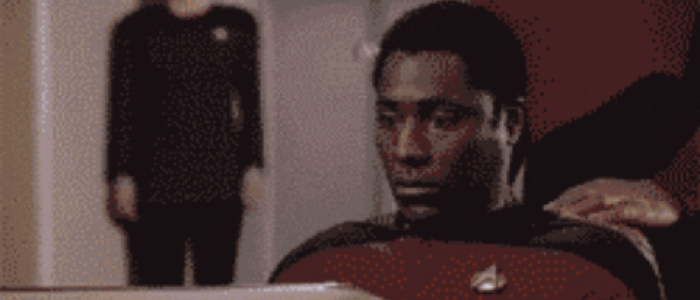
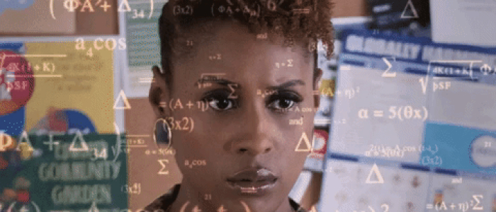

We spend endless hours falling down Internet rabbit holes. Caught in a stream of newsletters, podcasts, and Twitter threads, we surf the web, jumping from thought to thought, tab to tab, hoping for an intellectual breakthrough, exhilarated, but exhausted.
We are entering the golden age of writing. But knowledge is scattered — buried in the deep corners of the interwebs, found only by chance, and consumed in fleeting social media feeds that strip context and discourage reflection.
Founders, funders, creatives, and creators need a dedicated place to collect and connect the dots. That’s why we built startupy: a community-powered database for startup knowledge, organized associatively.
Startupy is a living, breathing, and surprisingly delightful place to fall down the Internet rabbit hole and stay up to speed on the pulse of startup culture.With Startupy, we’re not just creating a database, but an infrastructure for a new type of knowledge exchange.
We need to transition from information as an interruption technology to information as a thinking tool.
When we go online, we enter an environment that promotes cursory reading, distracted thinking, and superficial learning. Social media is a double edged sword. On the one hand, it’s a source of genuine insight. On the other hand, notifications, endless scrolling, subconscious triggers and an obsession with what’s “new” mean we have no control over how we spend our time and we’ve relegated the things we love to a fleeting feed. Infinite access to information will either destroy you or strengthen you. At Startupy, we want to make it nourish you.
In the age of information overload, the ultimate luxury is context.
The Internet made everyone a journalist, but as information becomes more abundant, the connections drawn between disparate pieces are becoming increasingly important.
Finding the next big productivity app is easy, but making sense of the productivity landscape is not. Startupy changes our relationship to information from one that is disjointed, chaotic, and grounded in linear thinking to a coherent graph of content and ideas, presented associatively.
Creative output starts with abundance, not a blank screen.
The power of the unaided mind is highly overrated. Humans think best when we have access to a lot of ideas in front of us. Everything builds on what came before. In order for us to truly create and contribute to the world, we have to be able to connect countless dots, to cross-pollinate ideas from a wealth of places, and to combine and recombine these to build new things.
Creative output starts with abundance, not a blank screen.
The power of the unaided mind is highly overrated. Humans think best when we have access to a lot of ideas in front of us. Everything builds on what came before. In order for us to truly create and contribute to the world, we have to be able to connect countless dots, to cross-pollinate ideas from a wealth of places, and to combine and recombine these to build new things.